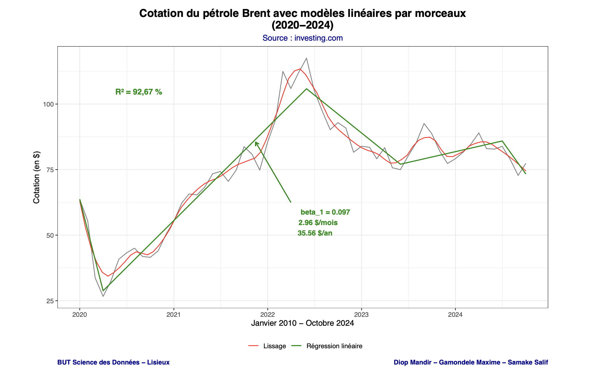

Analyse de Séries Temporelles
Étude des cotations de matières premières
Séries Temporelles
R
Régression
Modélisation
tidyverse
ggplot2

Contexte
Ce projet, réalisé dans le cadre du BUT Science des Données (IUT Grand Ouest Normandie, 2024-2025), porte sur l'analyse de séries temporelles de cotations de matières premières observées depuis le 1er janvier 2010.
Les matières premières étudiées incluent :
- ☕ Café (Futures café US C - USD)
- 🍫 Cacao (Futures cacao US - USD)
- 🍊 Jus d'orange (Futures jus d'orange - USD)
- 🍬 Sucre (Futures sucre Londres - USD)
- 🛢️ Pétrole Brent (Futures pétrole Brent - USD)
Source des données : Investing.com
Objectifs du projet
Mission 1 : Import et préparation des données
- Extraction des données depuis des fichiers PDF avec
tabulapdf - Structuration des données en tibble avec 5 variables par matière première :
- Date : jour de cotation
- Closed_Cotation : valeur à la fermeture
- Opened_Cotation : valeur à l'ouverture
- Highest_Cotation : valeur maximale journalière
- Lowest_Cotation : valeur minimale journalière
Mission 2 : Analyses statistiques
- Création de boxplots annuels pour visualiser les distributions
- Analyse de l'évolution moyenne mensuelle avec courbes de régression lissées
- Calcul et visualisation des taux d'évolution mensuels
- Étude de l'association entre café et cacao (régression linéaire simple)
- Analyse approfondie du pétrole Brent :
- Détection de saisonnalité
- Modélisation par régression linéaire par morceaux (2020-2024)
- Identification des ruptures de tendance
- Prévision sur 26 mois avec intervalle de confiance à 95%
Méthodologie
- Import et nettoyage des données PDF
- Exploration visuelle avec
ggplot2etfacet_wrap() - Calcul des statistiques descriptives et des corrélations
- Modélisation linéaire avec
lm() - Analyse des résidus et validation des modèles
- Prévisions avec
predict()et intervalles de confiance
Résultats clés
🛢️ Modélisation du pétrole Brent (2020-2024)
- Coefficient de détermination : R² = 92,67%
- Pente du modèle : β₁ = 0,097 (soit +2,96 $/mois ou +35,56 $/an)
- Points de rupture identifiés : plusieurs changements de tendance liés aux événements géopolitiques et économiques
- Prévision : estimation sur 26 mois avec bande de confiance à 95%
Interprétation : Le modèle de régression linéaire par morceaux capture efficacement les variations du prix du Brent,
avec un excellent ajustement (R² > 90%). Les ruptures de tendance correspondent aux grandes phases économiques de la période 2020-2024
(crise COVID-19, reprise économique, guerre en Ukraine).

Figure : Modélisation de la cotation du pétrole Brent (2020-2024) avec régression linéaire par morceaux. Le modèle identifie plusieurs ruptures de tendance et explique 92,67% de la variance (R² = 92,67%). La courbe verte représente le modèle de régression linéaire par morceaux, tandis que la courbe rouge montre le lissage des données.
Technologies utilisées
- R (tidyverse, ggplot2)
- tabulapdf (extraction PDF)
- dplyr (manipulation de données)
- lubridate (gestion des dates)
- RStudio
- Git & GitHub
- R Markdown
- Investing.com (source de données)
Livrables
Compétences acquises
- Manipulation de séries temporelles
- Extraction de données depuis PDF
- Visualisation avancée avec ggplot2
- Modélisation par régression
- Détection de ruptures de tendance
- Analyse de corrélation
- Prévision avec intervalles de confiance
- Interprétation de modèles économiques